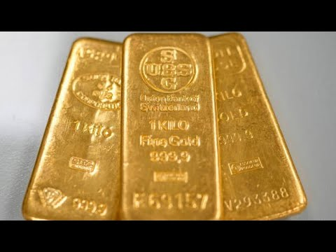

来B站一起耍【Global每日双语简报】
【哈维关于购买黄金的警告】
Summary: The discussion explores gold's historical performance as an inflation hedge, revealing its long-term stability but high volatility, comparing it to Roman and modern wages and drawing parallels to Bitcoin valuation.
摘要： 讨论探讨了黄金作为通胀对冲工具的历史表现，揭示了其长期稳定性但高波动性，并将其与罗马和现代工资进行比较，同时对比特币估值进行了类比。

⏱️ Estimated Reading Time: 4 min
We'll talk about this because I thought I was interested in your paper.
我们会讨论这个，因为我对你的论文很感兴趣。
And I think there was a previous paper you did a few years back that kind of talked about gold from a historical basis, meaning the idea of, okay, how much of protection or hedge or whatever you will, does it provide over certain periods of time.
我记得你几年前写过一篇论文，从历史角度探讨了黄金，即它在特定时期内能提供多少保护或对冲作用。
And it was like almost like you had to go back hundreds or maybe even thousands of years.
这几乎需要回溯数百年甚至数千年。
You can correct me if I'm wrong, to really sort of chart that outperformance.
如果我错了请纠正我，才能真正绘制出这种超额表现。
Explain that.
解释一下。
Yeah. So in this paper, we did this fascinating experiment where we found out what the wage of Roman Centurions were.
好的。在这篇论文中，我们做了一个有趣的实验，发现了罗马百夫长的工资。
So the Romans had very detailed records.
罗马人有非常详细的记录。
So we actually had the weight in gold of their wage and then compared that to the wage of an army captain in the U.S. and found that it was pretty similar.
我们实际上用黄金重量衡量了他们的工资，然后与美国陆军上尉的工资进行比较，发现非常相似。
And what that means is that gold's price in terms of a real so inflation adjusted gold is relatively constant through time.
这意味着，经通胀调整后的黄金实际价格在时间上是相对稳定的。
So it does provide an inflation hedge, but this is key.
因此它确实能对冲通胀，但关键在这里。
I said that it's as volatile as the S&P 500.
我说过它的波动性与标普500指数相当。
So to get that hedging ability, the horizon is very long.
因此，要获得这种对冲能力，时间跨度必须非常长。
So it's not five years, it's not ten years.
不是五年，也不是十年。
It's it's centuries or even millennia.
而是几个世纪甚至几千年。
So so again, we need to be very careful here because of the volatility of gold, can lead to a situation where it fails to provide that hedge.
所以我们必须非常谨慎，因为黄金的波动性可能导致它无法提供这种对冲。
So how do you know how much of a premium you want from gold then?
那么你如何知道你想从黄金中获得多少溢价呢？
Or how do you even know what a premium is?
或者你甚至如何知道溢价是什么？
At one point it might have been heresy to compare Bitcoin and gold, but just in terms of the valuation question, you could ask the same question How do you value an ounce of gold or a Bitcoin?
曾经将比特币与黄金比较可能是异端邪说，但就估值问题而言，你可以问同样的问题：如何衡量一盎司黄金或一个比特币的价值？
So in my research with clutter, we actually draw the analogy of the real price of gold.
因此，在与克拉特的研究中，我们实际上类比了黄金的实际价格。
So the idea if we inflation adjust gold and and we do show that gold holds its value through time.
如果我们对黄金进行通胀调整，确实表明黄金会随着时间的推移保持其价值。
So the real return on gold is zero, which means it holds its value.
因此黄金的实际回报为零，这意味着它保持了价值。
So it moves with inflation over very long periods of time.
因此它在很长一段时间内与通胀同步变动。
But again, if you if you think about that, we draw the analogy to a price earnings ratio for for a stock.
但如果你仔细想想，我们将其类比为股票的市盈率。
So so if the price earnings ratio is really high, then when you look at future returns, those returns are often low.
因此如果市盈率非常高，那么未来的回报往往较低。
And we do the same thing with the inflation adjusted price of gold.
我们对经通胀调整的黄金价格也做了同样的分析。
So we look at the inflation adjusted price and look at the real return on gold over the next ten years.
因此我们观察经通胀调整的价格，并预测未来十年黄金的实际回报。
And historically, that has been a low or negative.
历史上，这一回报一直较低或为负。